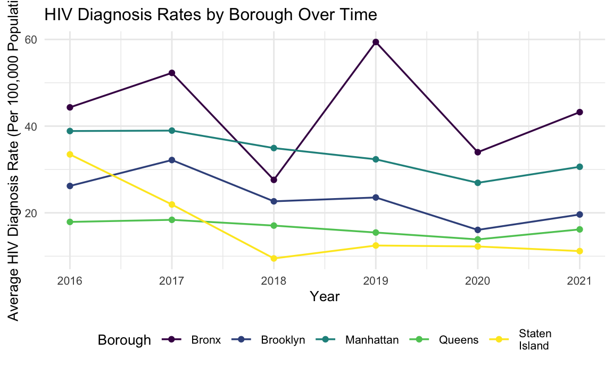
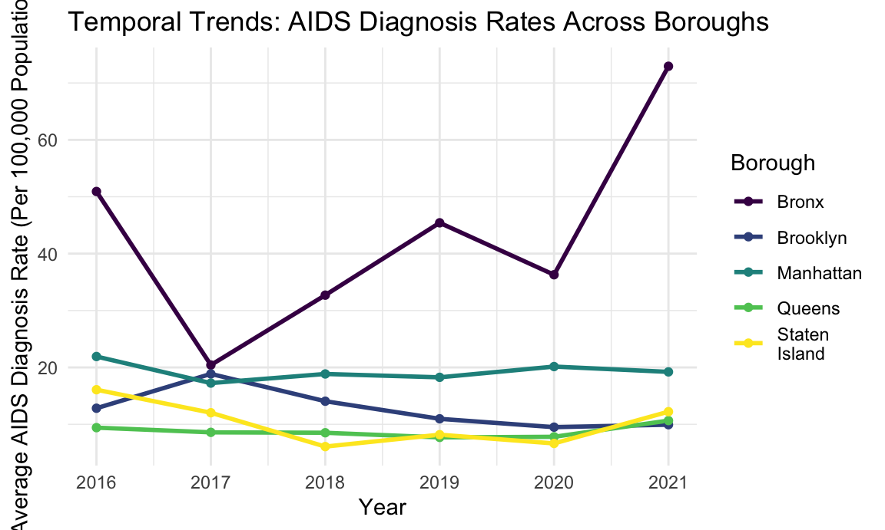
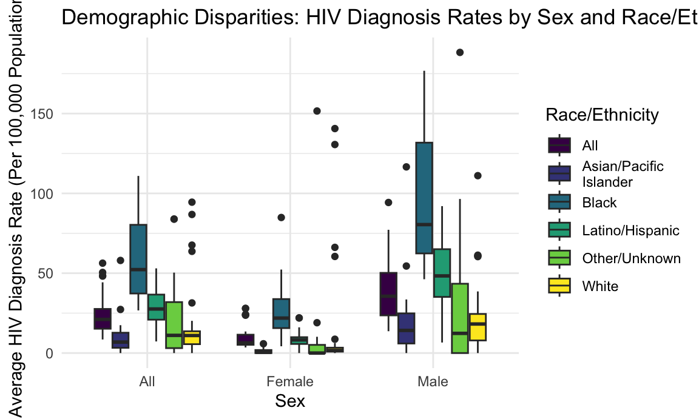
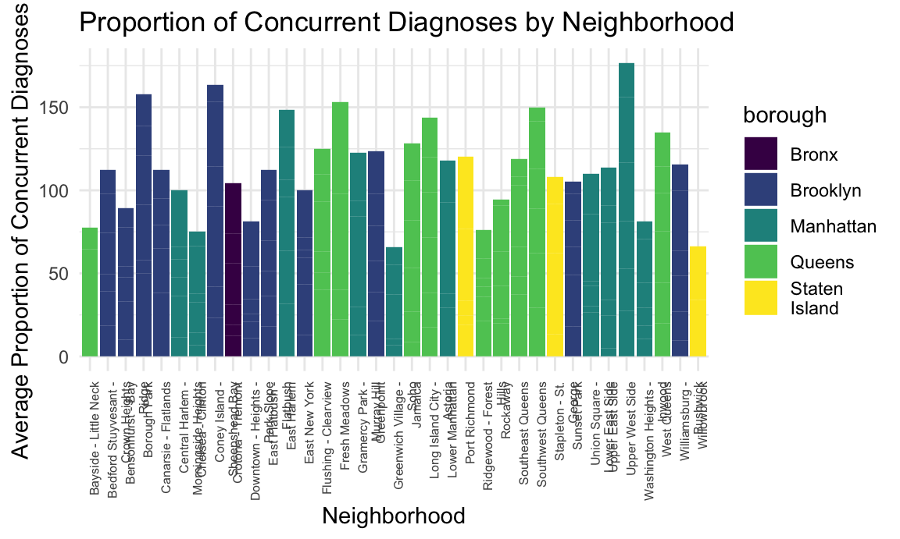
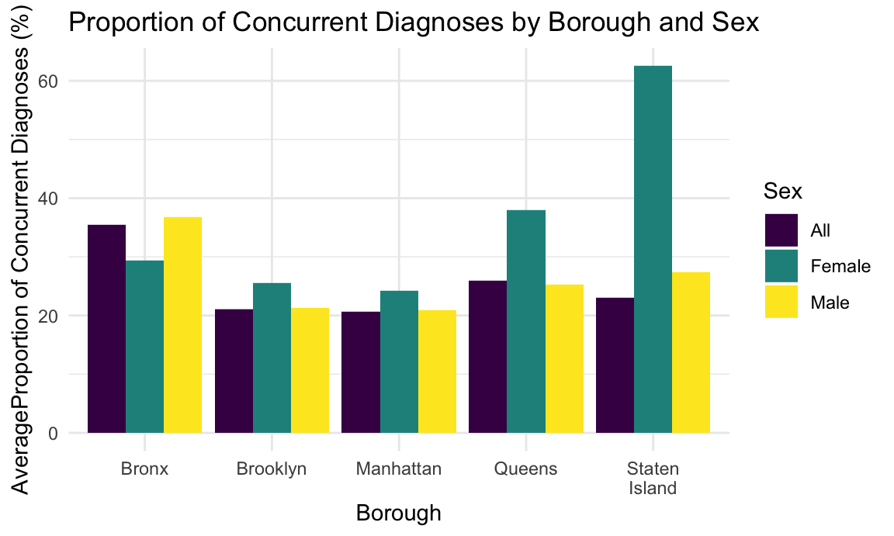
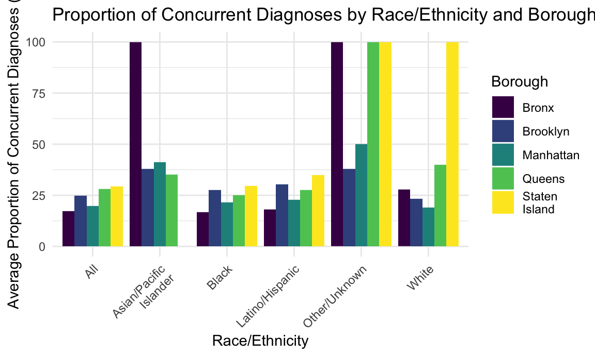

# Import the HIV and UHF datasets
HIV_df =
read.csv("./data/HIV_AIDS_Diagnoses_by_Neighborhood__Sex__and_Race_Ethnicity_20241118.csv")|>
janitor::clean_names()
UHF_df =
read.csv("./data/UHF_Neighborhoods.csv")|>
janitor::clean_names()
# Clean HIV dataset
HIV_cleaned_df = HIV_df |>
# Select rows where year 2016~2021
filter(year >= 2016) |>
# Convert Borough, Neighborhood (U.H.F), SEX, RACE/ETHNICITY to factors
mutate(
borough = as.factor(borough),
neighborhood_u_h_f = as.factor(neighborhood_u_h_f),
sex = as.factor(sex),
race_ethnicity = as.factor(race_ethnicity)
) %>%
# Convert necessary columns to numeric, handling non-numeric values
mutate(
total_number_of_hiv_diagnoses = as.numeric(total_number_of_hiv_diagnoses),
hiv_diagnoses_per_100_000_population = as.numeric(hiv_diagnoses_per_100_000_population),
total_number_of_concurrent_hiv_aids_diagnoses = as.numeric(total_number_of_concurrent_hiv_aids_diagnoses),
proportion_of_concurrent_hiv_aids_diagnoses_among_all_hiv_diagnoses = as.numeric(proportion_of_concurrent_hiv_aids_diagnoses_among_all_hiv_diagnoses),
total_number_of_aids_diagnoses = as.numeric(total_number_of_aids_diagnoses),
aids_diagnoses_per_100_000_population = as.numeric(aids_diagnoses_per_100_000_population)
)
# Merge datasets
HIV_UHF_df = HIV_cleaned_df |>
inner_join(UHF_df, by = c("borough", "neighborhood_u_h_f" = "uhf_neighborhood"))YEAR: Year of diagnosis.
Borough: Borough information (some missing values).
Neighborhood (U.H.F): Specific neighborhood identifiers.
SEX: Sex of individuals.
RACE/ETHNICITY: Racial/ethnic group classifications.
TOTAL NUMBER OF HIV DIAGNOSES: Counts of HIV diagnoses.
HIV DIAGNOSES PER 100,000 POPULATION: Rate of diagnoses normalized by population.
TOTAL NUMBER OF CONCURRENT HIV/AIDS DIAGNOSES: Concurrent diagnoses of HIV and AIDS.
PROPORTION OF CONCURRENT HIV/AIDS DIAGNOSES: Percentage of concurrent diagnoses.
TOTAL NUMBER OF AIDS DIAGNOSES: Counts of AIDS diagnoses.
AIDS DIAGNOSES PER 100,000 POPULATION: Rate of AIDS diagnoses normalized by population.
| Name | HIV_df |
| Number of rows | 8976 |
| Number of columns | 11 |
| _______________________ | |
| Column type frequency: | |
| character | 10 |
| numeric | 1 |
| ________________________ | |
| Group variables | None |
Variable type: character
| skim_variable | n_missing | complete_rate | min | max | empty | n_unique | whitespace |
|---|---|---|---|---|---|---|---|
| borough | 0 | 1.00 | 0 | 13 | 2928 | 7 | 0 |
| neighborhood_u_h_f | 0 | 1.00 | 3 | 36 | 0 | 66 | 0 |
| sex | 0 | 1.00 | 3 | 6 | 0 | 3 | 0 |
| race_ethnicity | 0 | 1.00 | 3 | 22 | 0 | 11 | 0 |
| total_number_of_hiv_diagnoses | 6 | 1.00 | 1 | 4 | 0 | 306 | 0 |
| hiv_diagnoses_per_100_000_population | 74 | 0.99 | 1 | 5 | 0 | 1260 | 0 |
| total_number_of_concurrent_hiv_aids_diagnoses | 2 | 1.00 | 1 | 3 | 0 | 121 | 0 |
| proportion_of_concurrent_hiv_aids_diagnoses_among_all_hiv_diagnoses | 1893 | 0.79 | 1 | 4 | 0 | 305 | 0 |
| total_number_of_aids_diagnoses | 3 | 1.00 | 1 | 4 | 0 | 238 | 0 |
| aids_diagnoses_per_100_000_population | 71 | 0.99 | 1 | 5 | 0 | 991 | 0 |
Variable type: numeric
| skim_variable | n_missing | complete_rate | mean | sd | p0 | p25 | p50 | p75 | p100 | hist |
|---|---|---|---|---|---|---|---|---|---|---|
| year | 0 | 1 | 2016.36 | 3.7 | 2010 | 2013 | 2017 | 2020 | 2021 | ▅▂▂▃▇ |
# Group by Borough and Year and calculate average HIV diagnosis rates
avg_hiv = HIV_UHF_df |>
group_by(borough, year) |>
summarise(Avg_HIV_Rate = mean(hiv_diagnoses_per_100_000_population, na.rm = TRUE))
avg_hiv## # A tibble: 30 × 3
## # Groups: borough [5]
## borough year Avg_HIV_Rate
## <chr> <int> <dbl>
## 1 Bronx 2016 44.3
## 2 Bronx 2017 52.3
## 3 Bronx 2018 27.6
## 4 Bronx 2019 59.4
## 5 Bronx 2020 34.0
## 6 Bronx 2021 43.2
## 7 Brooklyn 2016 26.2
## 8 Brooklyn 2017 32.2
## 9 Brooklyn 2018 22.7
## 10 Brooklyn 2019 23.5
## # ℹ 20 more rows# Plot HIV rates by Borough over time
ggplot(avg_hiv, aes(x = year, y = Avg_HIV_Rate, color = borough)) +
geom_line(linewidth = 0.6) +
geom_point(size = 1.5) +
labs(
title = "HIV Diagnosis Rates by Borough Over Time",
x = "Year",
y = "Average HIV Diagnosis Rate (Per 100,000 Population)",
color = "Borough"
) +
theme_minimal() +
theme(
text = element_text(size = 10),
legend.position = "bottom"
)
# Group by Borough and Year and calculate average AIDS diagnosis rates
avg_aids = HIV_UHF_df |>
group_by(borough, year) |>
summarise(Avg_AIDS_Rate = mean(aids_diagnoses_per_100_000_population, na.rm = TRUE))## `summarise()` has grouped output by 'borough'. You can override using the
## `.groups` argument.avg_aids## # A tibble: 30 × 3
## # Groups: borough [5]
## borough year Avg_AIDS_Rate
## <chr> <int> <dbl>
## 1 Bronx 2016 50.9
## 2 Bronx 2017 20.4
## 3 Bronx 2018 32.7
## 4 Bronx 2019 45.4
## 5 Bronx 2020 36.3
## 6 Bronx 2021 72.9
## 7 Brooklyn 2016 12.8
## 8 Brooklyn 2017 18.9
## 9 Brooklyn 2018 14.1
## 10 Brooklyn 2019 11.0
## # ℹ 20 more rows# Temporal trends of AIDS diagnoses
ggplot(avg_aids, aes(x = year, y = Avg_AIDS_Rate, color = borough, group = borough)) +
geom_line(size = 1) +
geom_point() +
labs(
title = "Temporal Trends: AIDS Diagnosis Rates Across Boroughs",
x = "Year",
y = "Average AIDS Diagnosis Rate (Per 100,000 Population)",
color = "Borough"
) +
theme_minimal()## Warning: Using `size` aesthetic for lines was deprecated in ggplot2 3.4.0.
## ℹ Please use `linewidth` instead.
## This warning is displayed once every 8 hours.
## Call `lifecycle::last_lifecycle_warnings()` to see where this warning was
## generated.
# Group by Sex and Ethnicity with average rate of HIV
avghiv_sex_ethinicity = HIV_UHF_df |>
group_by(borough, year,sex,race_ethnicity) |>
summarise(Avg_HIV_Rate = mean(hiv_diagnoses_per_100_000_population, na.rm = TRUE))## `summarise()` has grouped output by 'borough', 'year', 'sex'. You can override
## using the `.groups` argument.avghiv_sex_ethinicity## # A tibble: 540 × 5
## # Groups: borough, year, sex [90]
## borough year sex race_ethnicity Avg_HIV_Rate
## <chr> <int> <fct> <fct> <dbl>
## 1 Bronx 2016 All "All" 50.5
## 2 Bronx 2016 All "Asian/Pacific\nIslander" 0
## 3 Bronx 2016 All "Black" 74.5
## 4 Bronx 2016 All "Latino/Hispanic" 41.2
## 5 Bronx 2016 All "Other/Unknown" 0
## 6 Bronx 2016 All "White" 94.5
## 7 Bronx 2016 Female "All" 27.9
## 8 Bronx 2016 Female "Asian/Pacific\nIslander" 0
## 9 Bronx 2016 Female "Black" 38.7
## 10 Bronx 2016 Female "Latino/Hispanic" 22
## # ℹ 530 more rows# Demographic disparities in HIV diagnoses
ggplot(avghiv_sex_ethinicity, aes(x = sex, y = Avg_HIV_Rate, fill = race_ethnicity)) +
geom_boxplot() +
labs(
title = "Demographic Disparities: HIV Diagnosis Rates by Sex and Race/Ethnicity",
x = "Sex",
y = "Average HIV Diagnosis Rate (Per 100,000 Population)",
fill = "Race/Ethnicity"
) +
theme_minimal()
# Group by proportion of concurrent diagnoses by neighborhood
proprotion_diagnoses_neighborhood = HIV_UHF_df |>
group_by(borough, year,neighborhood_u_h_f) |>
summarise(Avg_proportion_Rate = mean(proportion_of_concurrent_hiv_aids_diagnoses_among_all_hiv_diagnoses, na.rm = TRUE)
)## `summarise()` has grouped output by 'borough', 'year'. You can override using
## the `.groups` argument.proprotion_diagnoses_neighborhood## # A tibble: 210 × 4
## # Groups: borough, year [30]
## borough year neighborhood_u_h_f Avg_proportion_Rate
## <chr> <int> <chr> <dbl>
## 1 Bronx 2016 "Crotona - Tremont" 12.4
## 2 Bronx 2017 "Crotona - Tremont" 6.58
## 3 Bronx 2018 "Crotona - Tremont" 12.2
## 4 Bronx 2019 "Crotona - Tremont" 24.6
## 5 Bronx 2020 "Crotona - Tremont" 17.9
## 6 Bronx 2021 "Crotona - Tremont" 30.9
## 7 Brooklyn 2016 "Bedford Stuyvesant -\nCrown Heights" 18.5
## 8 Brooklyn 2016 "Bensonhurst - Bay\nRidge" 10.2
## 9 Brooklyn 2016 "Borough Park" 50.0
## 10 Brooklyn 2016 "Canarsie - Flatlands" 0
## # ℹ 200 more rowsggplot(proprotion_diagnoses_neighborhood, aes(x = neighborhood_u_h_f, y = Avg_proportion_Rate,fill=borough)) +
geom_bar(stat = "identity") +
labs(
title = "Proportion of Concurrent Diagnoses by Neighborhood",
x = "Neighborhood",
y = "Average Proportion of Concurrent Diagnoses (%)"
) +
theme_minimal() +
theme(axis.text.x = element_text(angle = 90, hjust = 1, size=6))## Warning: Removed 2 rows containing missing values or values outside the scale range
## (`geom_bar()`).
# Group by proportion of concurrent diagnoses by borough and sex with average rate of HIV
proprotion_diagnoses_sex = HIV_UHF_df |>
group_by(borough, year,sex) |>
summarise(Avg_proportion_Rate = mean(proportion_of_concurrent_hiv_aids_diagnoses_among_all_hiv_diagnoses, na.rm = TRUE)
)## `summarise()` has grouped output by 'borough', 'year'. You can override using
## the `.groups` argument.proprotion_diagnoses_sex## # A tibble: 90 × 4
## # Groups: borough, year [30]
## borough year sex Avg_proportion_Rate
## <chr> <int> <fct> <dbl>
## 1 Bronx 2016 All 14.2
## 2 Bronx 2016 Female 5.5
## 3 Bronx 2016 Male 17.6
## 4 Bronx 2017 All 7.02
## 5 Bronx 2017 Female 3.4
## 6 Bronx 2017 Male 8.68
## 7 Bronx 2018 All 12.3
## 8 Bronx 2018 Female 11.8
## 9 Bronx 2018 Male 12.4
## 10 Bronx 2019 All 27.2
## # ℹ 80 more rows# Concurrent diagnoses by borough and sex
ggplot(proprotion_diagnoses_sex, aes(x = borough, y = as.numeric(Avg_proportion_Rate), fill = sex)) +
geom_bar(stat = "identity", position = "dodge") +
labs(
title = "Proportion of Concurrent Diagnoses by Borough and Sex",
x = "Borough",
y = "AverageProportion of Concurrent Diagnoses (%)",
fill = "Sex"
) +
theme_minimal()
# Group by proportion of concurrent diagnoses by borough and ethnicity with average rate of HIV
proprotion_diagnoses_race = HIV_UHF_df |>
group_by(borough, year,race_ethnicity) |>
summarise(Avg_proportion_Rate = mean(proportion_of_concurrent_hiv_aids_diagnoses_among_all_hiv_diagnoses, na.rm = TRUE)
)## `summarise()` has grouped output by 'borough', 'year'. You can override using
## the `.groups` argument.proprotion_diagnoses_race## # A tibble: 180 × 4
## # Groups: borough, year [30]
## borough year race_ethnicity Avg_proportion_Rate
## <chr> <int> <fct> <dbl>
## 1 Bronx 2016 "All" 16.4
## 2 Bronx 2016 "Asian/Pacific\nIslander" NaN
## 3 Bronx 2016 "Black" 15.4
## 4 Bronx 2016 "Latino/Hispanic" 17.9
## 5 Bronx 2016 "Other/Unknown" NaN
## 6 Bronx 2016 "White" 0
## 7 Bronx 2017 "All" 9.47
## 8 Bronx 2017 "Asian/Pacific\nIslander" NaN
## 9 Bronx 2017 "Black" 15.1
## 10 Bronx 2017 "Latino/Hispanic" 6.17
## # ℹ 170 more rows# Concurrent diagnoses by race/ethnicity and borough
ggplot(proprotion_diagnoses_race, aes(x = race_ethnicity, y = as.numeric(Avg_proportion_Rate), fill = borough)) +
geom_bar(stat = "identity", position = "dodge") +
labs(
title = "Proportion of Concurrent Diagnoses by Race/Ethnicity and Borough",
x = "Race/Ethnicity",
y = "Average Proportion of Concurrent Diagnoses (%)",
fill = "Borough"
) +
theme_minimal() +
theme(axis.text.x = element_text(angle = 45, hjust = 1))## Warning: Removed 15 rows containing missing values or values outside the scale range
## (`geom_bar()`).